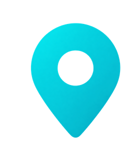
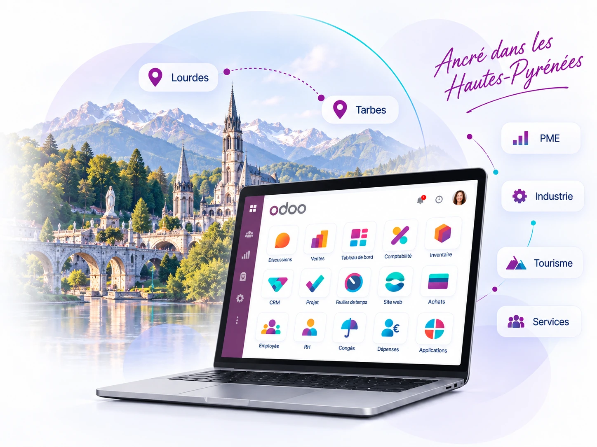

Piloter la croissance
Structurez vos processus et gagnez en visibilité sur votre activité pour accompagner le développement de votre entreprise.
Votre partenaire Odoo dans les Hautes-Pyrénées
 dans les Hautes-Pyrénées
dans les Hautes-PyrénéesSMART C&P, intégrateur Odoo basé à Albi, accompagne les entreprises des Hautes-Pyrénées dans leurs projets ERP Odoo. Nous intervenons notamment autour de Tarbes et de Lourdes, à distance et sur site lorsque les étapes du projet le nécessitent.

Basé à Albi,intervention dans lesHautes-Pyrénées
Structurer les processus, mieux relier les équipes et disposer d’une donnée fiable pour piloter l’activité et accompagner la croissance.
Structurez vos processus et gagnez en visibilité sur votre activité pour accompagner le développement de votre entreprise.
Connectez vos processus pour réduire les doubles saisies et mieux partager l’information au quotidien.
Centralisez les données utiles dans un environnement cohérent, fiable et évolutif.
Avancez par étapes avec les utilisateurs pour sécuriser la prise en main et la conduite du changement.
Une solution adaptée aux PME, aux entreprises industrielles, aux activités touristiques et aux sociétés de services des Hautes-Pyrénées.
CRM, ventes, achats, stocks, projets, facturation et autres applications peuvent partager les mêmes données et processus.
Commencez par le périmètre prioritaire puis faites évoluer votre environnement au rythme de votre activité.
Le projet est cadré autour des besoins réels, avec une approche pragmatique qui privilégie le standard avant le spécifique.
Un accompagnement complet, standard-first et orienté adoption.
Paramétrage de la solution, ateliers métier, recette, préparation du lancement et accompagnement des équipes.
En savoir plus →Analyse des processus, clarification des priorités et définition d’un périmètre de projet réaliste.
En savoir plus →Préparation de la reprise, nettoyage, contrôles et intégration progressive des données utiles au nouveau système.
En savoir plus →Des formations adaptées aux usages de vos équipes pour faciliter la prise en main et l’autonomie.
En savoir plus →Un accompagnement dans la durée pour corriger, faire évoluer et fiabiliser votre environnement Odoo.
En savoir plus →Un budget construit à partir du périmètre réel : utilisateurs, paramétrage, données, formation, pilotage et besoins spécifiques.
Parler de votre projet →Une méthode structurée, progressive et orientée adoption.
Comprendre les enjeux, les processus, les utilisateurs et le périmètre prioritaire.
Construire Odoo par cycles courts, avec démonstrations, retours et arbitrages réguliers.
Préparer la mise en production, former les équipes et sécuriser le démarrage.
Accompagner les usages, corriger les irritants et faire évoluer la solution dans la durée.
Une approche métier pour les entreprises de Tarbes, Lourdes et plus largement des Hautes-Pyrénées.
Structurez vos processus et vos données pour mieux accompagner le développement.
Reliez ventes, achats, stocks et suivi client dans un même environnement.
Pilotez projets, activité commerciale et organisation des équipes avec des données partagées.
Structurez achats, stocks, production et suivi des flux en fonction de votre périmètre Odoo.
Proximité & efficacité projet
SMART C&P accompagne les entreprises des Hautes-Pyrénées à distance et sur site. Nous adaptons la présence terrain aux temps forts du projet : cadrage, ateliers, lancement et formation.
Les réponses aux premières questions avant de cadrer votre projet Odoo.
Oui. SMART C&P accompagne les entreprises de Tarbes, de Lourdes et plus largement des Hautes-Pyrénées à distance et sur site selon les besoins du projet.
Oui, lorsqu'il est cadré autour des besoins réels. Nous privilégions une démarche progressive et une approche standard-first afin d'éviter une complexité qui n'apporte pas de valeur aux utilisateurs.
Le budget dépend du nombre d'utilisateurs, des applications, du paramétrage, de la reprise de données, de la formation, du pilotage et des éventuels besoins spécifiques. Le cadrage permet de construire une estimation sur un périmètre clair.
Oui, selon leur qualité et leur structure. Nous définissons les données utiles, les règles de nettoyage et les contrôles à effectuer avant leur import dans Odoo.
Parlons de vos enjeux métier et du bon niveau d’accompagnement pour votre projet ERP.